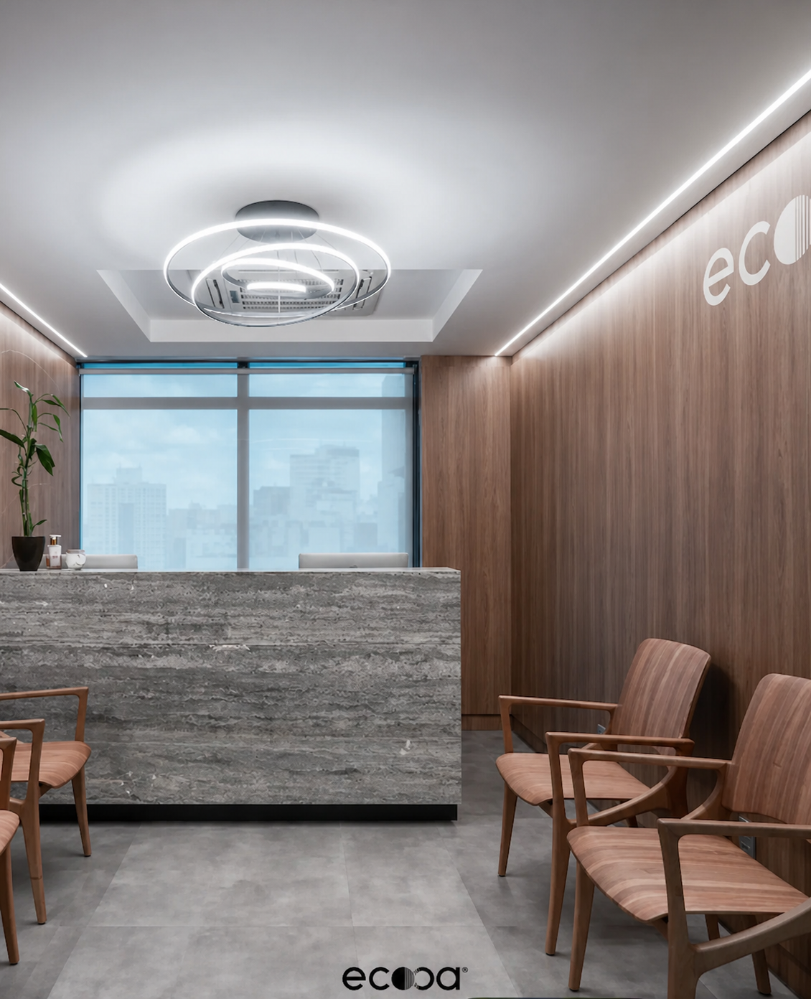
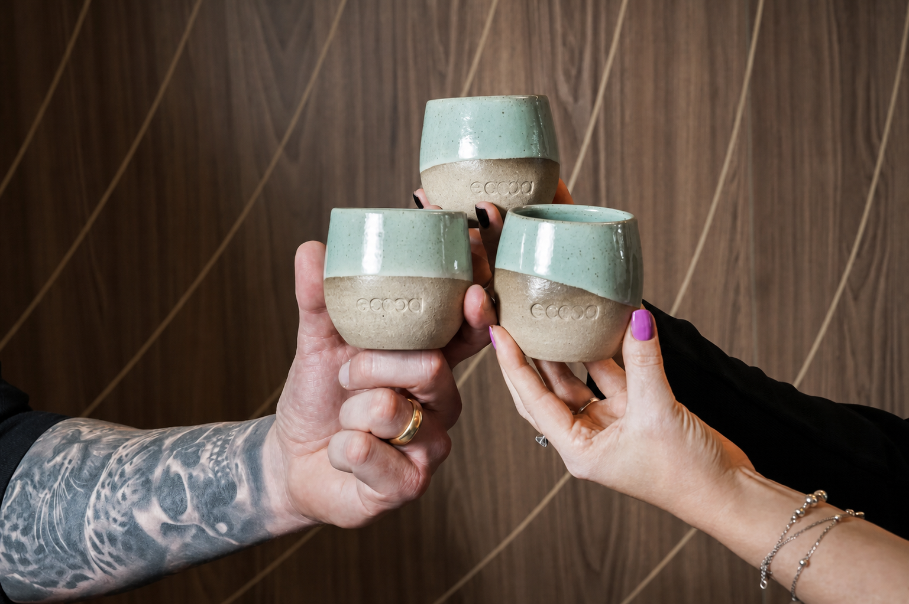
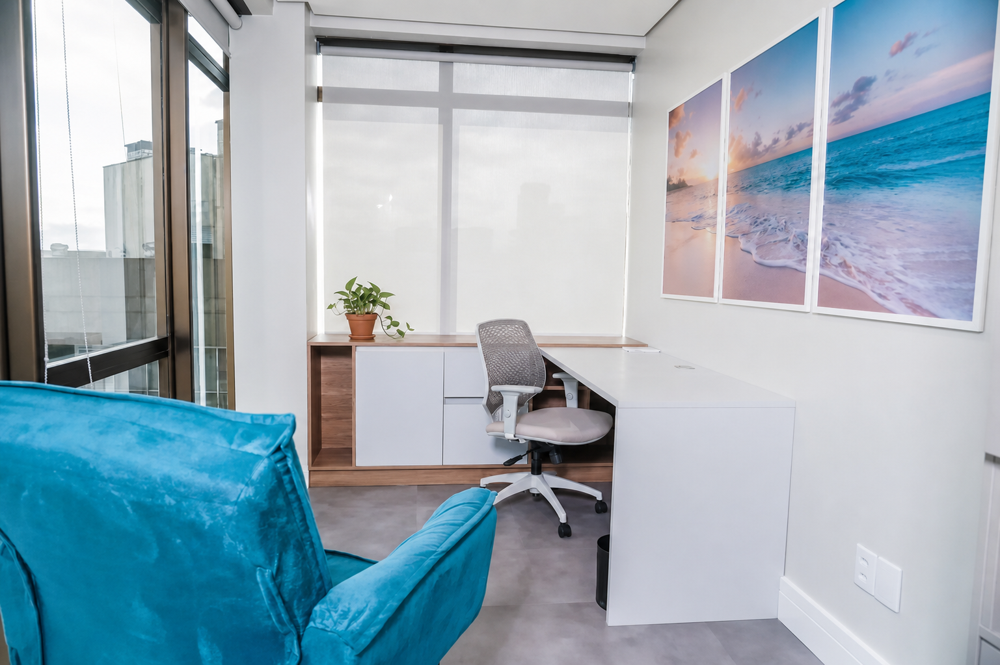

Somos a ecooa. Um ecossistema de saúde, inovação e cuidado genuíno.
Fundada em 2021 em Moinhos de Vento, nascemos com um propósito claro: transformar a forma como a saúde é vivida em Porto Alegre, um lugar onde o cuidado pode ecooar além dos consultórios.
como a ecooa nasceu.
A ecooa nasceu de uma pergunta simples: por que medicina, nutrição, estética e psicologia não conversam entre si?
Em 2021, os sócios fundadores Gustavo Gehrke, médico, Jessica Stein, nutricionista, e Scheila Andrzejewski, médica, decidiram construir um espaço onde os profissionais trabalham juntos, e não em silos. Um lugar em que o paciente não precisa repetir sua história a cada consulta, porque a equipe já se conhece, já se comunica e já cuida de forma integrada.
O nome veio dessa ideia: o cuidado que ecoa. Um cuidado que não termina na porta do consultório e que se multiplica entre profissionais, entre áreas e entre pessoas.
Hoje, sob a liderança de Gustavo e Jessica, a ecooa é uma clínica multidisciplinar em Moinhos de Vento, com mais de 30 profissionais. O princípio permanece o mesmo: saúde de verdade acontece quando há conexão entre as pessoas.
Nove bandeiras. Intactas.
Cinco movimentos entre a sua dúvida e uma direção confiável.
Quem faz a ecooa existir.

Gustavo Gehrke Rodrigues
médico · sócio fundador
Medicina do esporte, longevidade, performance e hormoniologia. Conduz a visão clínica e institucional da ecooa.
CRM-RS 35.822 · a confirmar
Jessica Stein
nutricionista · sócia e diretora de ensino
Nutricionista e professora de pós-graduação. Lidera o braço educacional da ecooa e responde pela experiência da clínica.
CRN 9495
conhecer a ecooa.cademy →
Rafaella
Além de cuidar de todos os agendamentos e do fluxo da clínica, Rafaella acolhe quem chega com atenção e com o melhor café, moído na hora, para aquecer o seu dia.
Projetado para acolher.
Um andar inteiro em Moinhos de Vento, com travertino, madeira real, luz natural e a cidade ao fundo. Cada detalhe foi pensado para que a consulta tenha o tempo que precisa ter.
ver a localização

